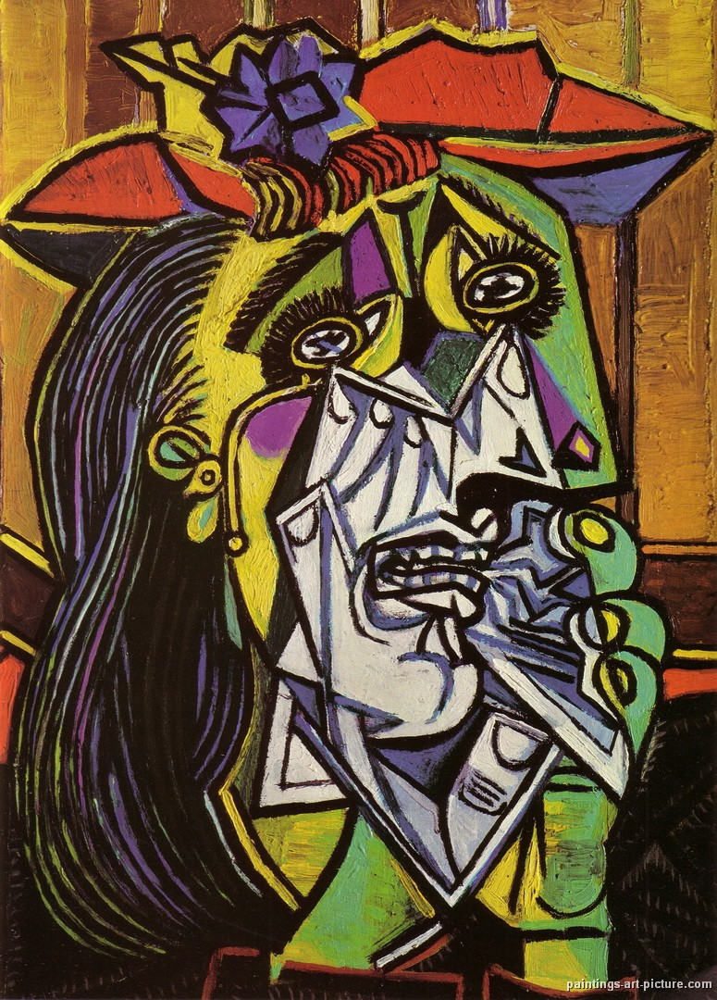

Featured Post
by Santa Maria, Steven * July 24, 2015
I feel that no matter how crazy or upsetting our world may seem at times as we read the news, it's comforting that there's always an aspect of structure somewhere even in the littlest things. Read More
Other Posts
by Santa Maria, Steven * July 14, 2015
Prior to starting work on the very site you're looking at, I learned the basics of a 'class' and 'id.' However, how could these concepts help get my site from a 1990s style build to a what-I-call-mid-2010-contemporary style? Read More
by Santa Maria, Steven * July 24, 2015
I'm a big fan of multiplier effects--that is, to get a multiplied, more effective outcome from a minimum input. In this respect, the image that comes to mind is of a man pushing a jagged rock uphill versus pushing one downhill. Read More